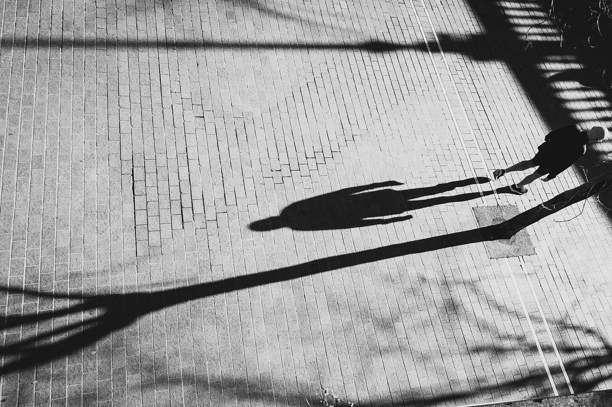

Physical Shadow
A dark shape formed when light is blocked by an object.
There is no shadow without light.
Discover the hidden world of shadows, where science meets art, imagination and human perception.
Explore the ShadowA shadow is a dark area created when an object blocks light from reaching a surface.
Light generally travels in straight lines. When an opaque object blocks the light, a shadow appears behind it.
The English word "shadow" comes from Old English "sceadu", meaning shade or darkness.
Shadows are more than physical phenomena. They also appear in psychology, literature and everyday language.
A dark shape formed when light is blocked by an object.
In Jungian psychology, the shadow represents aspects of ourselves that we may reject or hide.
Artists use shadows to create depth, contrast, atmosphere and emotion.
Shadows can symbolize mystery, fear, memory or the unknown.
What happens to a shadow when the position of light changes?
Move the light source and discover how shadows change their position and shape.
The light is positioned in the center.
Shadows are everywhere. They transform ordinary places into extraordinary scenes.

Our online activities leave traces of information, sometimes described metaphorically as digital shadows.
The word shadow can describe how past events continue to influence the present.
A shadow requires a difference in illumination. Without light, there is darkness, but no visible shadow to distinguish.
Exploring shadows reveals connections between the physical world and the way humans interpret it.
A shadow can reveal the presence of an object without showing the object itself.
Shadows can change dramatically while the objects creating them remain the same.